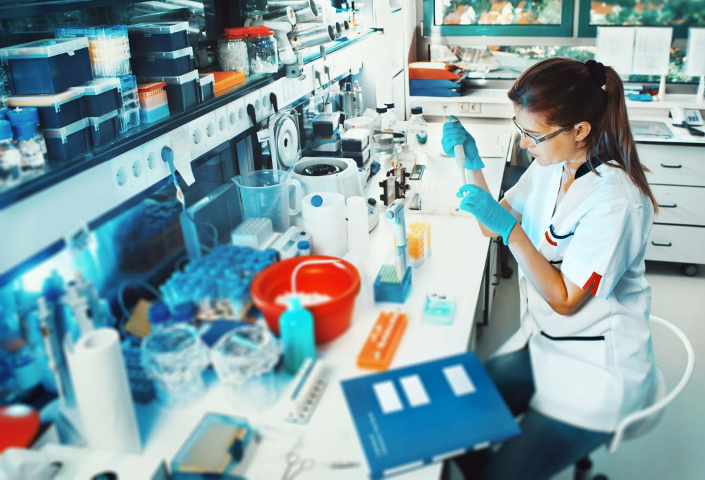

TECHNNOLOGIES IN BIOMEDICINE
Technologies in Biomedicine are of paramount importance, both for clinical and laboratory practice.
Through technologies, several processes have become more effective and diagnoses more accurate. It is
worth highlighting that they can help from scheduling an online exam to optimizing time, as, through
automated and agile processes, the team can provide better quality services.
Many laboratories have state-of-the-art technologies, previously much equipment was used manually, as
time goes by more diseases appear, with this the large volume of exams also and consequently the demand
for new research, through situations like these the laboratories they needed to be adapted with equipment
that could meet great demands.
